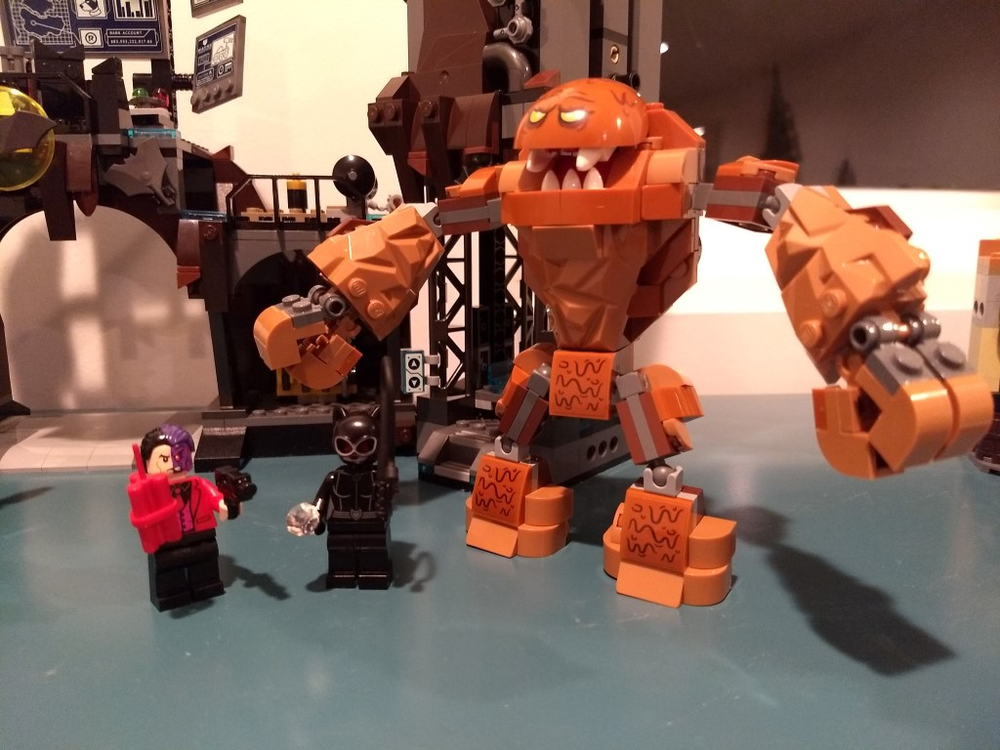
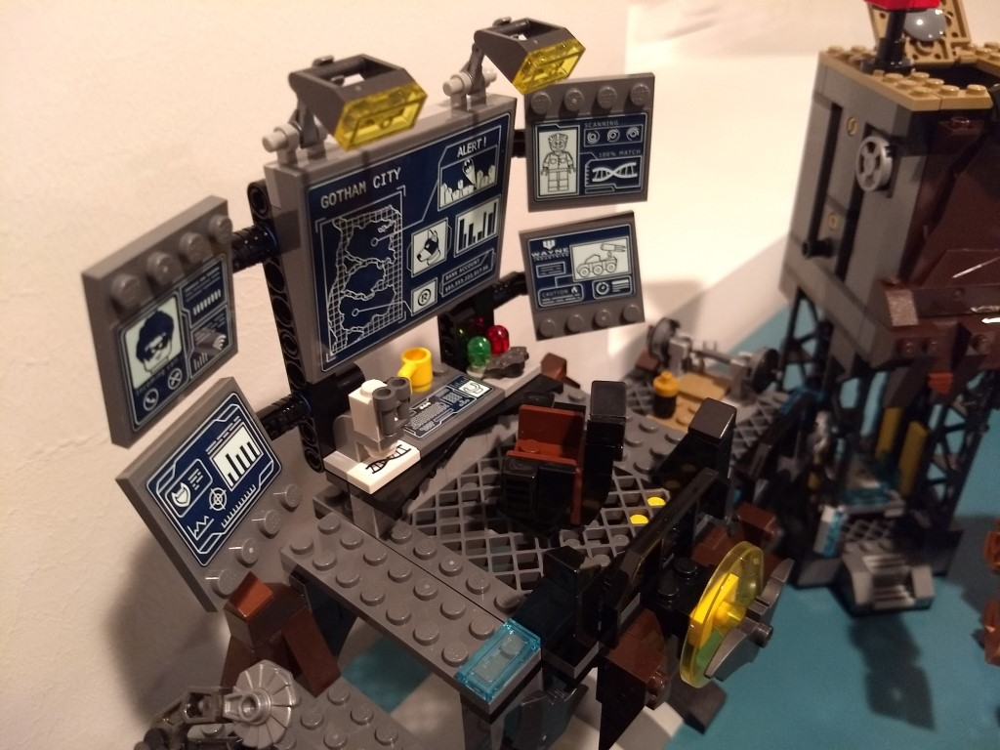
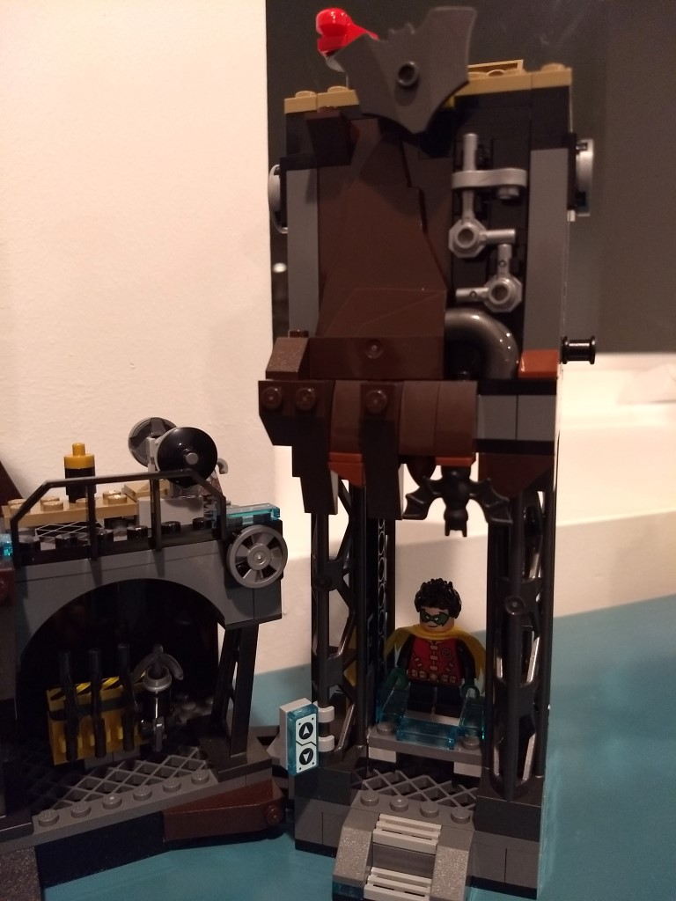
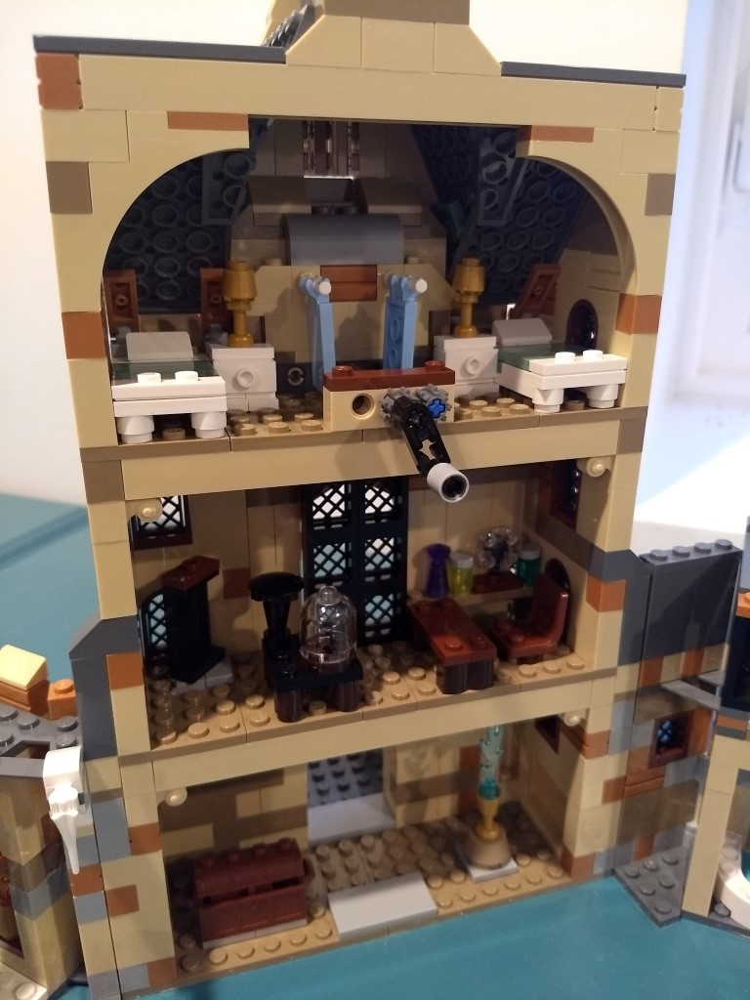
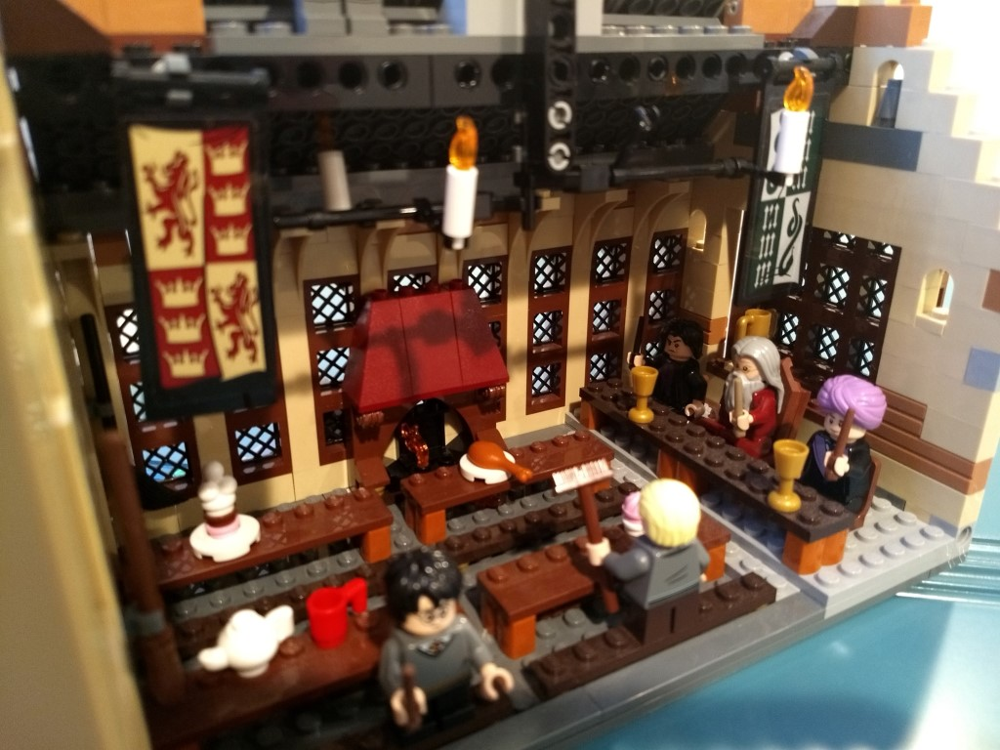

this is the hole batcave it took me a while I think it is really really cool it has a bunch of tricks.

this is all the good guys and the cool bat tank save us batman!
this is all the badguys I hope batman stops them or will it be to late!
this is were batman does all of his work and spys at badguys.
this is were bruce wayne transforms into Batman !!!!!
This is the first giant harry potter LEGO set that I did I think it is really cool I like how the inside of it has a couple details from the books and the movies.
this is the clock tower it is the most recent LEGO set that I have built it is based of the fourth book I think it is preaty neat I like how there is the prefects bathroom and dumbeldores office I also like the dance floor.
this is the inside of the main dining hall I think its cool that it has the tables the fireplace and the banners.